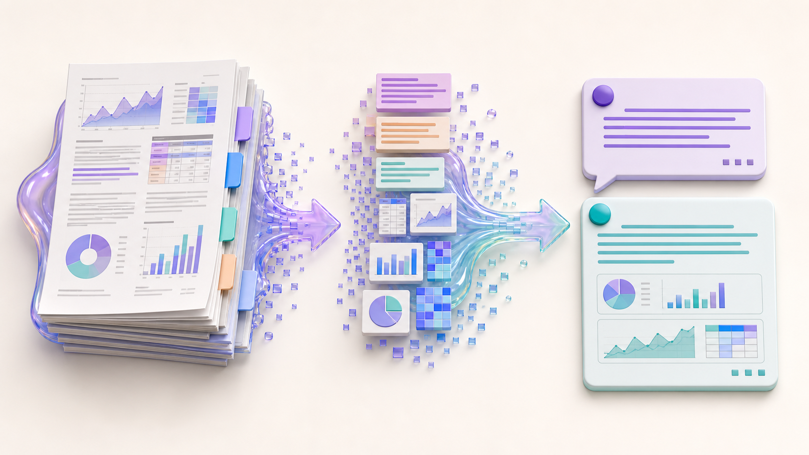
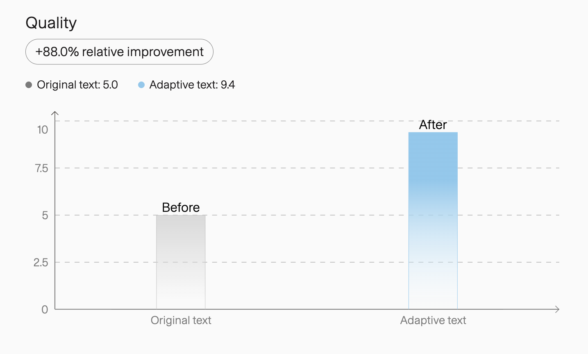
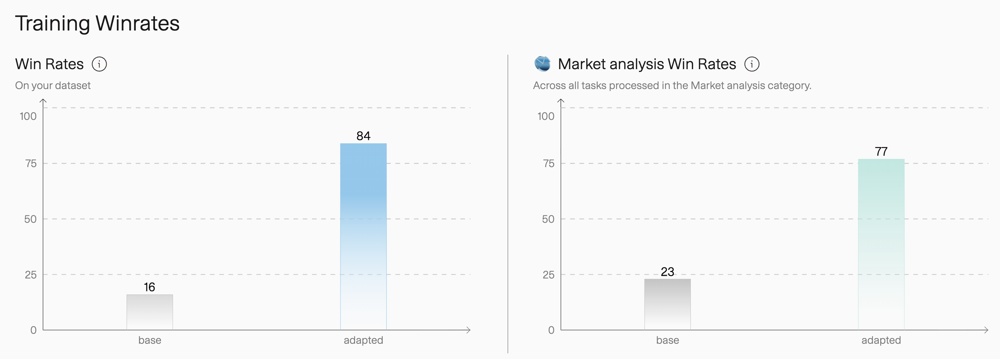
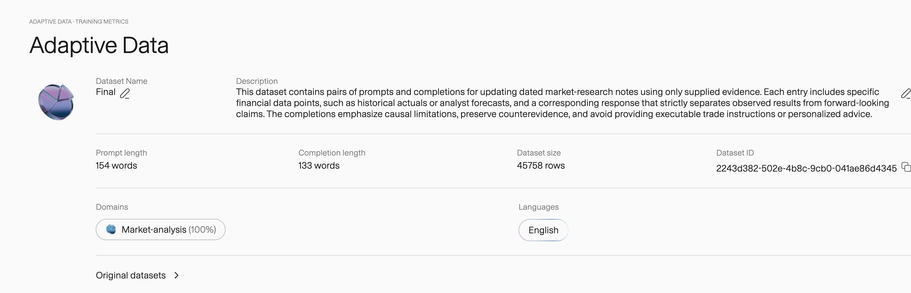
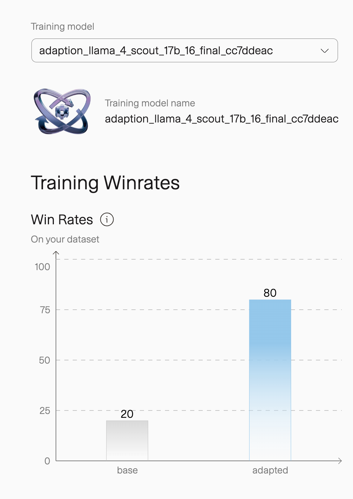

Introduction
Keith and Huy both work in finance, with Keith in equity research. We entered Adaption Labs’ AutoScientist Challenge with a practical goal: train a small model that could actually assist us in our day-to-day work.
If we could train a useful model ourselves, it could be especially valuable in an enterprise setting: potentially cheaper to run, self-hostable, and easier to keep sensitive financial data within our own infrastructure.
As a starting point, we set out to automate one part of the job: reading financial evidence and producing a first draft of an equity-research analysis, including forecasts, valuations, recommendations, and the reasoning behind them.
Training such a model ourselves would normally require substantial work and compute across both data and training. In this challenge, however, we could focus primarily on preparing and cleaning the finance training data around our actual workflows.
Adaption Labs removed much of the complexity of training and, later, scaling our experiments, which let us concentrate on the finance-specific work we knew best.
Attempt #1: Proof of Concept
Data
We started with roughly 1,500 sell-side reports on Southeast Asia’s listed companies, published between 2011 and 2026. The collection included earnings reviews, valuation updates, and target-price revisions written by professional analysts.
The reports contained exactly the style of analysis we wanted the model to learn, but they were not training examples yet. SFT requires both an instruction and a target response, but we only had the target—the analysis from the report—and no instruction that could have produced it.
Extraction
Several early extraction approaches failed for the same reason: they generated plausible tasks that the source report did not actually answer. The final extraction method works in reverse: it finds a real analyst conclusion first, removes that conclusion from the available evidence, and then reconstructs only the question that the evidence can support.
{kind=link}

Earlier fixed templates asked every example for counterevidence and an invalidation condition, even when the source contained neither. In a 50-row review, 45 rows failed the counterevidence-and-invalidation-condition check. We therefore derived each task from its conclusion and applied quality gates to produce a smaller, traceable baseline.
Adaptive Data
The 589-row baseline was traceable but offered limited variation for fine-tuning. We therefore uploaded it to Adaptive Data, a platform that automatically reshapes and optimizes training data. The platform expanded those examples to 27,862 rows; 27,405 were used for training. The Adaption platform quality score increased from 5.0 to 9.4, moving the dataset from grade C to grade A.
{kind=link}

In the matched example below, Adaptive Data preserved the prompt and evidence while making the completion easier to inspect and evaluate.
We raise our target price by 17% as we roll it over to YE2021, factor in a 1.2-ppt decrease in our house cost of equity to 13.0% and lift our aggregate 2020F-2023F NPAT-MI by 2% thanks to wood revenue, partly offset by projected lower capacity utilization for the quartz business.
2020F NPAT-MI is nudged up by 2% due to wood exports. 2021F will see elevated earnings growth backed by robust wood and quartz exports, along with the condo handover. Revenue recognition is adjusted to 75% in 2021 and 25% in 2022. The blended target PER for core businesses is raised to 10.6x.
The evidence does not support a conclusion on the net change to the final target price, as the offsetting effects of delayed revenue versus higher multiples are not quantified in aggregate.
AutoScientist
Once the dataset was ready,
AutoScientist
automatically handled the optimization and hosting of the fine-tuning run, allowing us to
focus on the finance task rather than manually iterating on the training recipe. For
Attempt #1, it trained a rank-16 LoRA adapter on
Llama-3.3-70B-Instruct for two epochs, with loss on completions only. It also
produced two preference evaluations.
{kind=link}

More importantly, the 77-to-23 result came from Adaption's separate Market Analysis evaluation, which was constructed independently of our dataset. This separate evaluation extends the evidence beyond our own distribution.
Limitations
Narrow source coverage. The initial corpus focused on company-level equity research, so the model may understand a company’s fundamentals but miss how interest rates, inflation, policy changes, commodity prices, or sector-wide events affect its outlook. The next stage is to add institutional market research and macroeconomic news so the model can reason across companies and sectors.
Small seed dataset. Our initial 589 examples could not provide enough breadth or variation for a robust finance workflow, limiting the range of situations the model could learn to handle. The next stage is to expand both the number of source reports and the resulting training samples.
Attempt #2: Scaling 50x
Data
Attempt #2 followed directly from the limitations of Attempt #1. The method worked, but the dataset was still too small and narrow to show whether the workflow would hold up at scale. Around the same time, an office-hours conversation with Sara Hooker, co-founder of Adaption Labs, reinforced the importance of substantially larger training sets.
We therefore expanded the source corpus from roughly 1,500 to about 7,000 institutional reports. The expanded corpus added macro outlooks, sector studies, fund reviews, and fixed-income commentary. As a result, our training corpus grew from ~500 → 45,000+ samples.
The expanded source corpus required a broader task taxonomy. Each training row records a task family, an asset family, and the relationship between evidence and conclusion. This taxonomy also adds a task that Attempt #1 lacked: deciding when the evidence is insufficient.
More than one third of the rows reward the model for declining to make an unsupported claim. Insufficient-evidence tasks matter because fluent synthesis is not enough; an analyst also needs to recognize when the available evidence cannot support a conclusion.
Scaling the dataset also gave us room to test different adaptation strategies. We ran Adaptive Data three times, using three recipes, and merged the outputs with Adaption’s Combine workflow. The three generations used the same source corpus but expressed each analytical task differently. The combined dataset therefore increased row diversity without implying that each generated row came from an independent source.
| Version | Rows | Recipe | Quality score |
|---|---|---|---|
| Dataset 1 | 15,252 | Completion only | 7.0 → 9.2 |
| Dataset 2 | 15,253 | Prompt + completion | 7.0 → 9.5 |
| Dataset 3 | 15,197 | Independent variant | 7.0 → 9.5 |
| Final | 45,758 | Combined outputs | 8.0 → 9.4 |
{kind=link}

The combined dataset entered Adaptive Data with a higher baseline Adaption platform quality score. Each source generation started at 7.0, while the combined dataset started at 8.0 and finished at 9.4. The three generations share the same 1,753 leakage groups, so the 45,758 rows represent roughly 15,250 unique generated items rather than three independent corpora. The final row count came from broader source coverage and multiple adaptation recipes.
Model
With the larger dataset ready, the remaining question was whether the training workflow
could scale alongside the data. AutoScientist trained a rank-32 LoRA adapter for
Llama 4 Scout 17B on all 45,758 rows, completing two epochs in 168 steps.
Results
The two attempts answer different questions. Attempt #1 provides the stronger broader-category evidence through Adaption's separate Market Analysis evaluation. Attempt #2 tests whether the full data and training pipeline can scale to a substantially broader finance corpus.
At that larger scale, Attempt #2 produced 45,758 rows and raised the Adaption platform quality score from 8.0 to 9.4. In a separate dataset-specific preference evaluation, the adapted model won 80 to 20. Like the earlier win rates, the 80-to-20 result is a pairwise preference score, not an accuracy measure.
{kind=link}

Attempt #2 has no category-level result, so the 80-to-20 preference describes performance only on its own distribution. The evidence supports scale, not better generalization.
Acknowledgements
We thank Adaption Labs for hosting the AutoScientist Challenge and for building Adaptive Data and AutoScientist, the tools we used to expand the training data and automate model training in a practical environment. We also thank Sara Hooker for the office-hours advice that reinforced our decision to scale the data, and Ross Giagkoudis for being consistently supportive and helpful in Discord throughout the challenge.
Resources
Attempt #1
-
Dataset
 Hugging Face
Kaggle
Hugging Face
Kaggle
-
Model
Hugging Face
Kaggle
Attempt #2
-
Final dataset
Hugging Face
Kaggle
-
Final model
Hugging Face
Kaggle
Adaption Labs
- Adaptive Data Generate & synthesize training data
- AutoScientist Automate LLM training